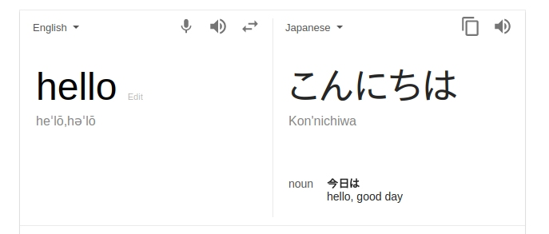
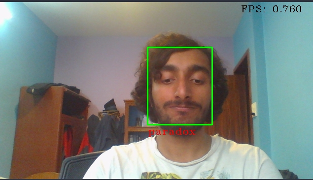
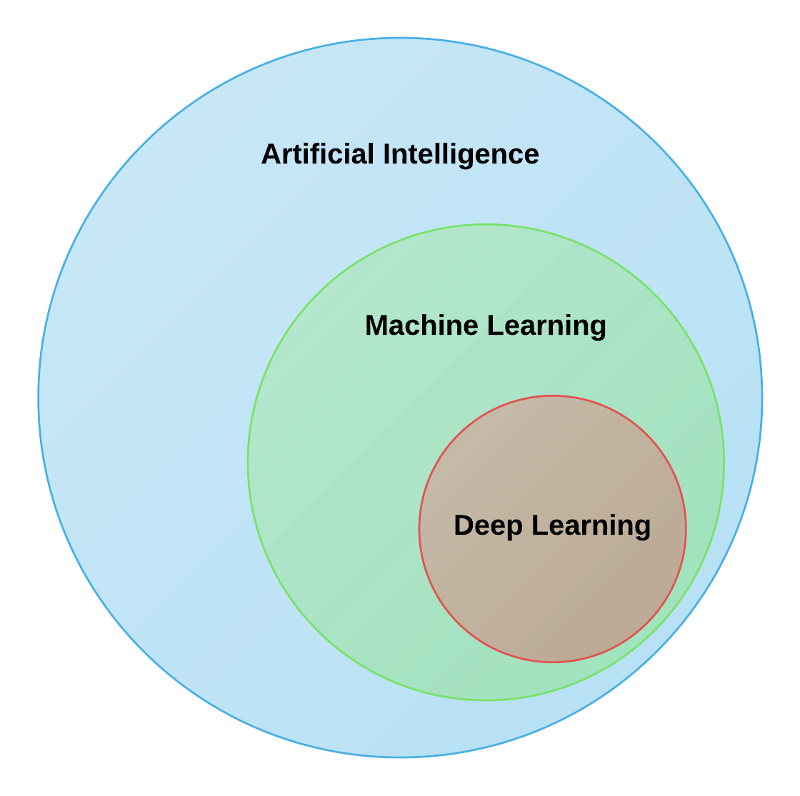
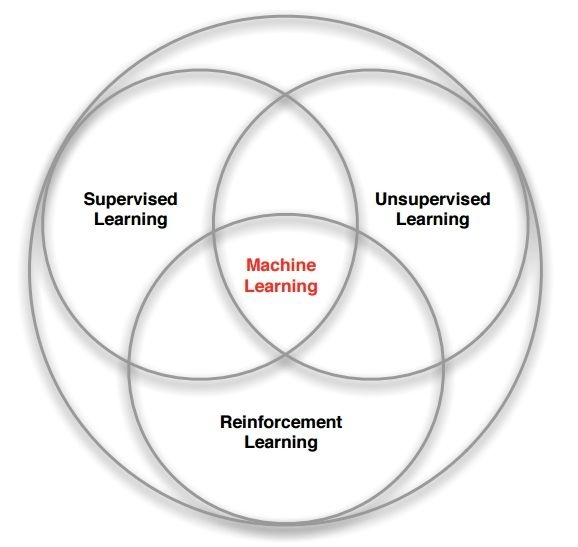
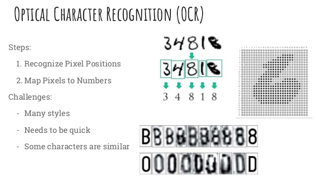
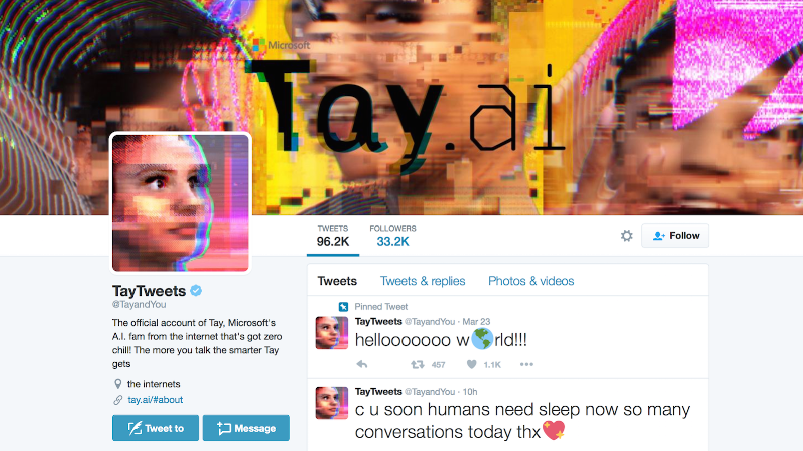
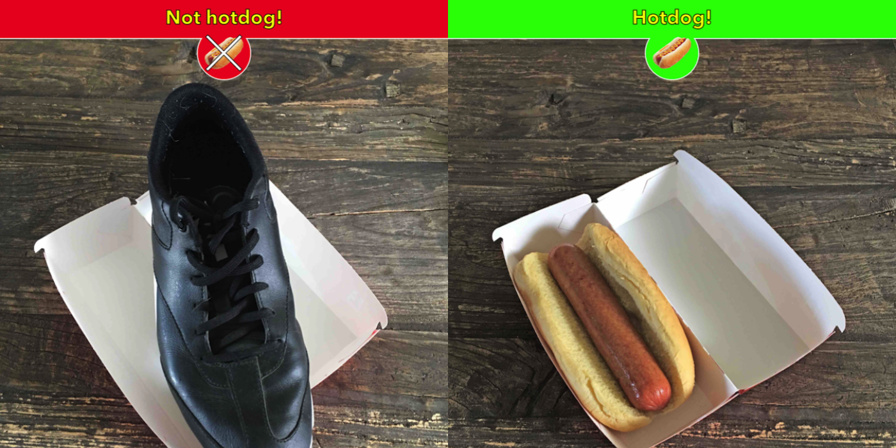
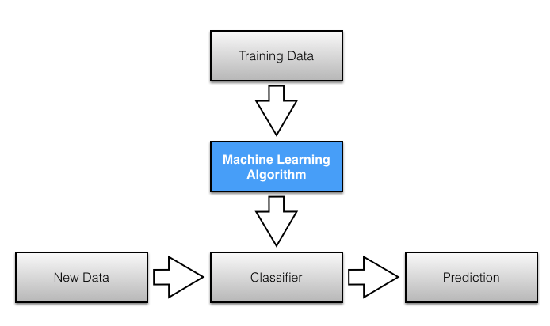
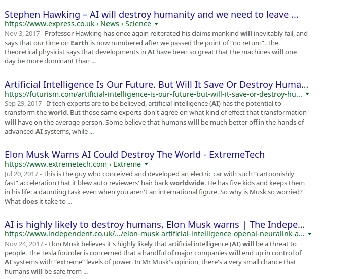

AI
GitHub/ NISH1001
nishanpantha.com.np
What This Talk About
AI from a non-technicalperspective
Myths and Hoaxes
Reality
Current Progress
But first...
what is Artificial Intelligence?
Building systems that can do intelligent things
Intelligence is
Perpective
Psychological
Ambiguous
Map
Translate
Alpha Go
Youtube's Recommendation

Facebook's News Feed

Photo Manipulation
Drones
Text Generation

Face Recognition
Other
- Spam Filter in Email
- Google Search
- Weather Prediction
- Games
How does a Machine Learn?
Machine Learning :D
one of the mechanisms to AI
AI Hierarchy
Building systems that learn from experience
Different methods used to LEARN
Machine Learning
Supervised Learning
- Train the system
- Student learning from a teacher
Cat vs Dog
OCR
RIP Tay Tweets
Hot Dog or Not?
Supervised Learning
Unsupervised Learning
- Let the system figure out the patterns itself
- Students learning on their own


Usage
- Topic modelling
- Unusal activity detection
- Grouping similar texts
Reinforcement Learning
- Rewards based learning
I don't know how to act in this environment, can you find a good behavior and meanwhile I'll give you feedback.

Myths
AI is all about making machines that can think
Not Even Close
AI won’t be bound by human ethics
AI will spin out of control
Autonomous Systems only do good for what they are trained for
AI will be a series of sudden breakthroughs
Slow and Steady
News Media Be Like
News Media Be Like
Artifically Intelligent?
Perhaps, NO

Should We Fear?
No. But Yes in some ways due to social media.
AI has become a misnomer
Where Are We?
Artificial Super Intelligence
Perhaps, Never...
Artificial General Intelligence
Not quite sure we will make it there...
Artificial Narrow Intelligence
Definitely, here...
Reality
Still a baby
Data. Data. Data.